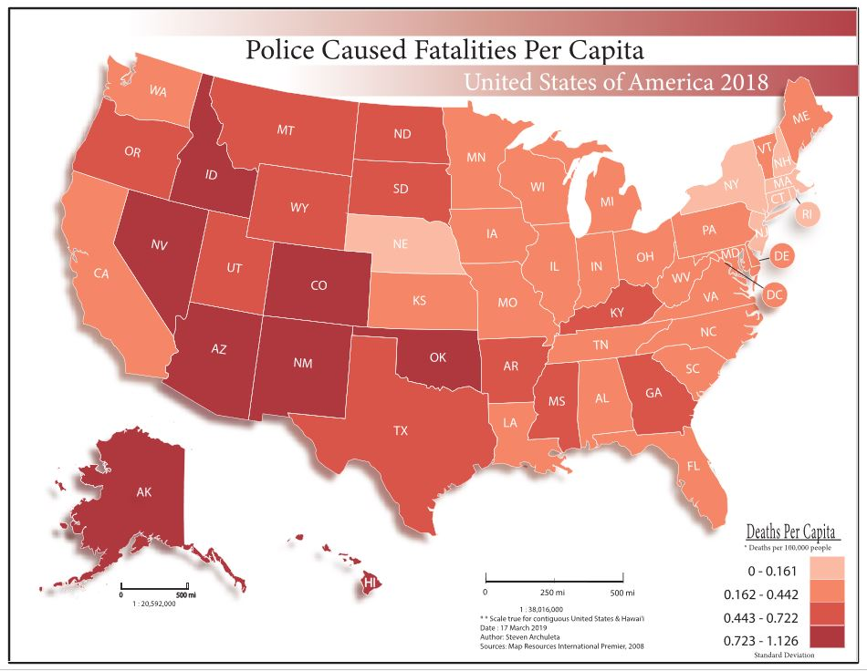
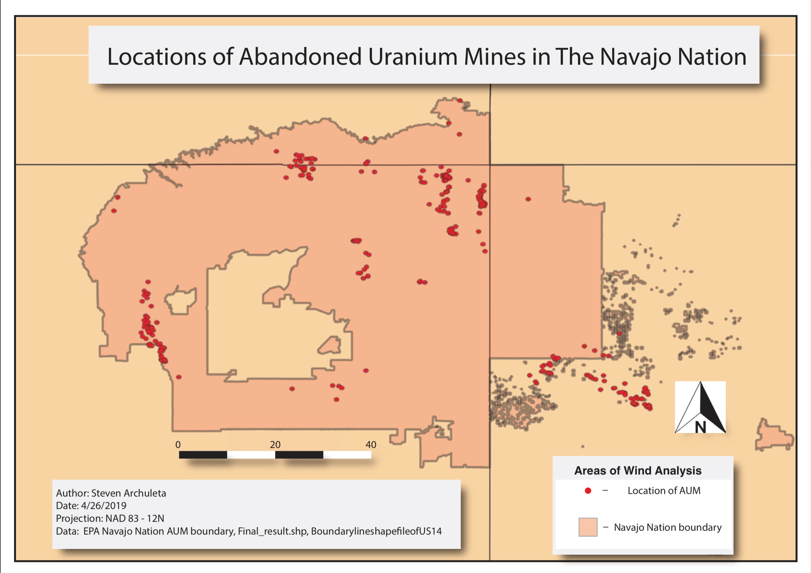

GIS technician with experience in cartography, remote sensing, programming, and spatial data analysis.
Education
University of New Mexico - Albuquerque, NM 2017 - 2019
Bachelor of Science in Geography with a minor in Sustainability- Phi Kappa Phi member
- magna cum laude
Fayetteville Technical Community College - Fayetteville, NC 2015-2016
Associate Degree of General Education- Improved professional and technical skills
Skills
- Cartography
- Land Navigation
- Remote Sensing via drone
- Spatial Analysis
- Java
- Pyhton
- HTML
- CSS
- ArcMap
- QGIS
- Google Earth Pro
- MapCruncher
- Microsoft Office; Word, Powerpoint, Excel, Outlook
Coding Languages
Software
Experience
-
Undergraduate Intern
P-50 Project - Ph.D. Yan Lin UNM Geography Department - Albuquerque, NM
Fall 2018 and Spring 2019- Created multiple Python programs for historic wind analysis using NOAA surface wind datasets
- Study of the spatial distribution of radioactive material from the abandoned uranium mines of the Navajo Nation by fluvial and aeolian transportation.
-
Videographer/Editor/Second Photographer
Briana Nicole Photography - Albuquerque, NM and Destination
2016 - Present- Work with clients to shoot and develop high-quality videos and photographs.
- Most events are on the weekend and have been scheduled months in advance.
- Schedule available upon request.
-
Project Manager
Parrot Bay Pool Company - Fayetteville, NC
2014 - 2015- In charge of scheduling subcontractors.
- Managed cleaning and mantinence crews.
- Conduct repairs and consultations.
-
Airborne Infantryman
82nd Airborne Division, U.S. Army - Fort Bragg, NC
2010 - 2014- Responsible for the maintenance and operation of valuable government property.
- Worked as a member of a close-knit team to accomplish challenging tasks.
GIS Python Samples
Remote Sensing Samples

Litchi Drone Flight Automation
Result OrthoImage from Drone Flight
Cartography Samples
- 
- 
Video Samples
Josalyn and Graesen 2018 from Archuleta Films on Vimeo.
Kylah & Victor Cancun from Archuleta Films on Vimeo.
Looking for More Samples?
Contact me and I will be happy to supply more examples of my work.